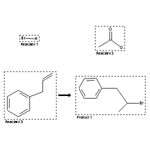

|  |
| FA | RX(1); FLST(1); RX(1) |
Reaction (1 of 1)
| Reaction ID | 6676348 |
| Reactant BRN | 3587158; 506007; 1098501 |
| Reactant | hydrogen bromide; acetic acid; allylbenzene |
| Product BRN | 2041553 |
| Product | (2-bromo-propyl)-benzene |
| No. of Reaction Details | 1 |
Reaction Details (1 of 1)
| Reaction Classification | Chemical behaviour |
| Comment | Handbook |
| Citation Pointer | 1340853; Journal; Kharasch; Potts; JOCEAH; J.Org.Chem.; 2; 1937; 196;985858; Journal; Riegel; Wittcoff; JACSAT; J.Amer.Chem.Soc.; 68; 1946; 1805;1701260; Journal; Carter; JBCHA3; J.Biol.Chem.; 108; 1935; 619, 624; |
Reference (1 of 3)
| Citation Number | 985858 |
| Document Type | Journal |
| Authors | Riegel; Wittcoff |
| CODEN | JACSAT |
| Journal Title | J.Amer.Chem.Soc. |
| (Series) Volume | 68 |
| Publication Year | 1946 |
| Page | 1805 |
Reference (2 of 3)
| Citation Number | 1340853 |
| Document Type | Journal |
| Authors | Kharasch; Potts |
| CODEN | JOCEAH |
| Journal Title | J.Org.Chem. |
| (Series) Volume | 2 |
| Publication Year | 1937 |
| Page | 196 |
Reference (3 of 3)
| Citation Number | 1701260 |
| Document Type | Journal |
| Authors | Carter |
| CODEN | JBCHA3 |
| Journal Title | J.Biol.Chem. |
| (Series) Volume | 108 |
| Publication Year | 1935 |
| Page | 619, 624 |